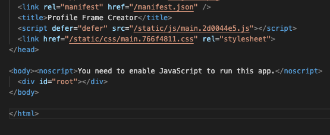

This is a guide on how to install the Profile Frame Creator on your page.
The easiest way to install the Profile Frame Creator is to take the build folder as a whole and put all the contents on your webserver
This will allow the Profile Frame Creator to be a full website and you can just access it by going to https://www.yourwebsite.com
The next easiest way to install the Profile Frame Creator is to make it it's own solo page.
Copy the static folder in build to the root of your webserver
Rename the index.html file to whatever page name you want. (ex: profile-frame-creator.html)
Put the newly renamed page whereever you want it located.
Access the page at https://www.yourwebsite.com/path/to/your/file/your-file-name.html
This is probably how most everyone wants to use the Profile Frame Creator, by putting it into a page on your website.
Copy the static folder in build to the root of your webserver
Copy paste the last 2 lines inside the head element into the sourcecode of your page. They should be a script and a link element.
Copy Paste the div element with the id root to where you want the Profile Frame Creator to be at.
Access the page at https://www.yourwebsite.com/path/to/your/page.html